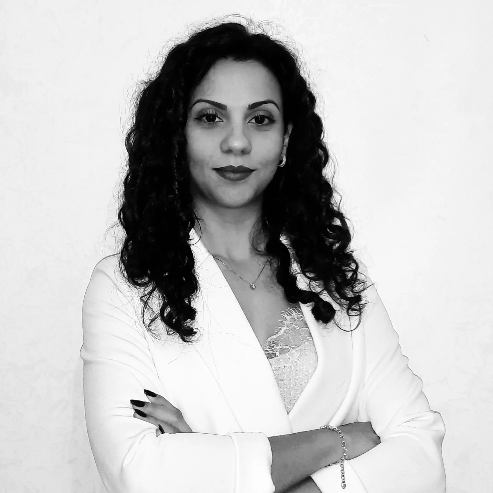
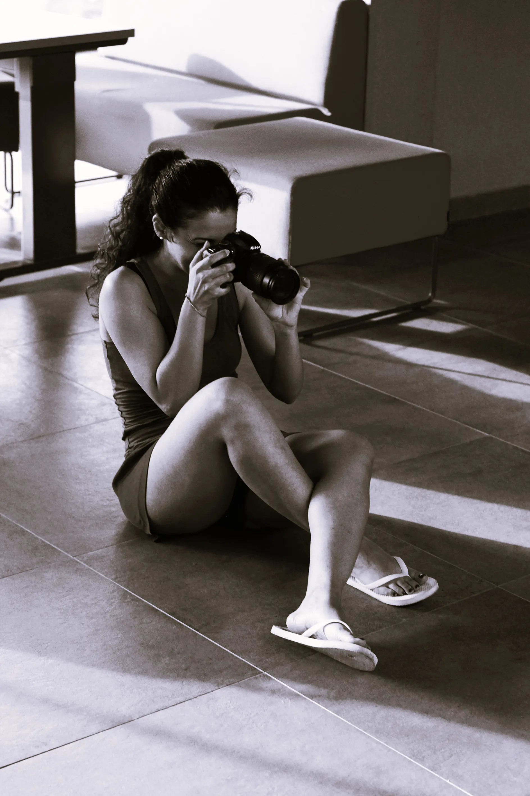
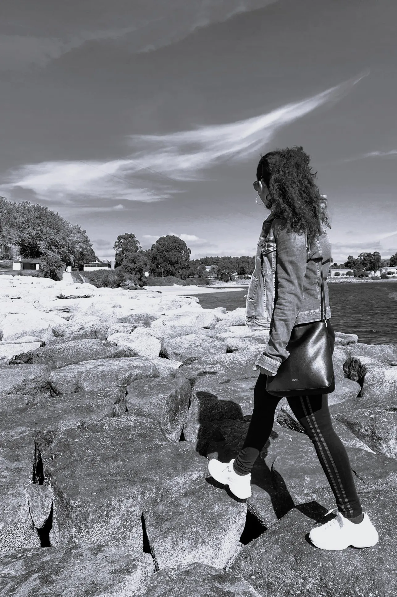
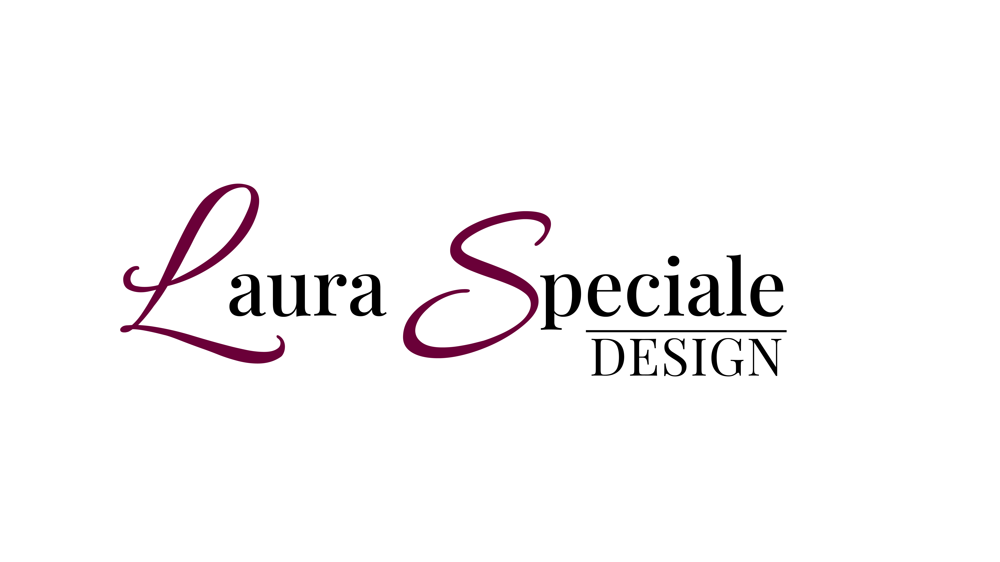

About Me
Sono una designer laureata in Disegno Industriale presso l'Università degli Studi di Palermo e attualmente sto completando la mia specializzazione in Fashion Design System all'Università di Firenze.
La mia formazione dirama in diversi settori:
- Fashion Design
- Web Design
- Architectural Design
- Product Design


Esperienze e Visione
Questo approccio multidisciplinare è stato nutrito da esperienze pratiche e contesti dinamici che hanno
definito il mio metodo di lavoro:
Prospettiva Internazionale
L'esperienza Erasmus+ in Spagna ha ampliato i miei orizzonti progettuali,
abituandomi ad affrontare il design con uno sguardo cosmopolita e flessibile.
Rigore Progettuale e Spaziale
Il tirocinio in ambito architettonico mi ha permesso di coniugare la visione
creativa con la precisione esecutiva, attraverso la modellazione, il rilievo e la documentazione tecnica.
Strategia e Brand Identity
I progetti focalizzati sul sistema moda hanno affinato
la mia capacità di integrare ricerca di mercato, sviluppo di concept e strategia di comunicazione per l'esperienza retail.
Problem-Solving e Dinamismo
Le esperienze operative a contatto con il pubblico e la gestione di flussi ad alto ritmo hanno
sviluppato una spiccata capacità di lavoro in team, adattabilità e cura del dettaglio.
La Mia Filosofia
Grazie a questo bagaglio eclettico, ricerco costantemente l'equilibrio ideale tra forma, funzione e strategia, traducendo complessità e idee in soluzioni visive armoniche e coerenti.
Per me progettare significa connettere settori apparentemente distanti — dalla scala del prodotto all'identità visiva, dallo spazio architettonico al dettaglio del capo d'abbigliamento — ponendo sempre l'utente e il posizionamento del brand al centro del processo creativo.

